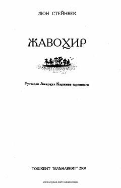

JMarvarid topgan kambag'al oilaning fojiali taqdiri haqidagi ta'sirli qissa.
Ushbu asar jamiyatdagi ijtimoiy adolatsizliklarni va boylik ortidan insoniylikni yo'qotish fojiasini aks ettiruvchi ta'sirli qissadir. Asar marvarid izlovchi Kino va uning oilasi boshidan kechirgan dramatik voqealar orqali inson tabiatining murakkab qirralarini ochib beradi.